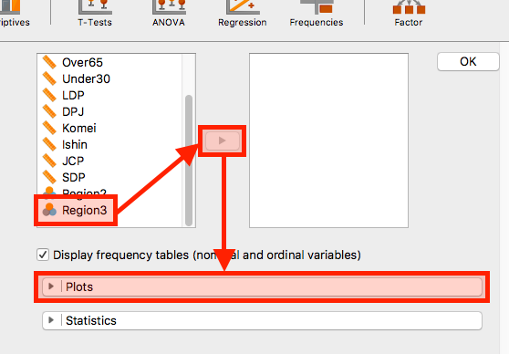
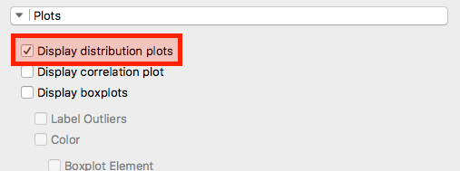
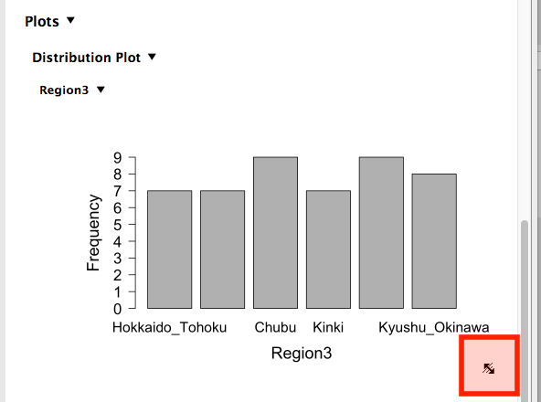
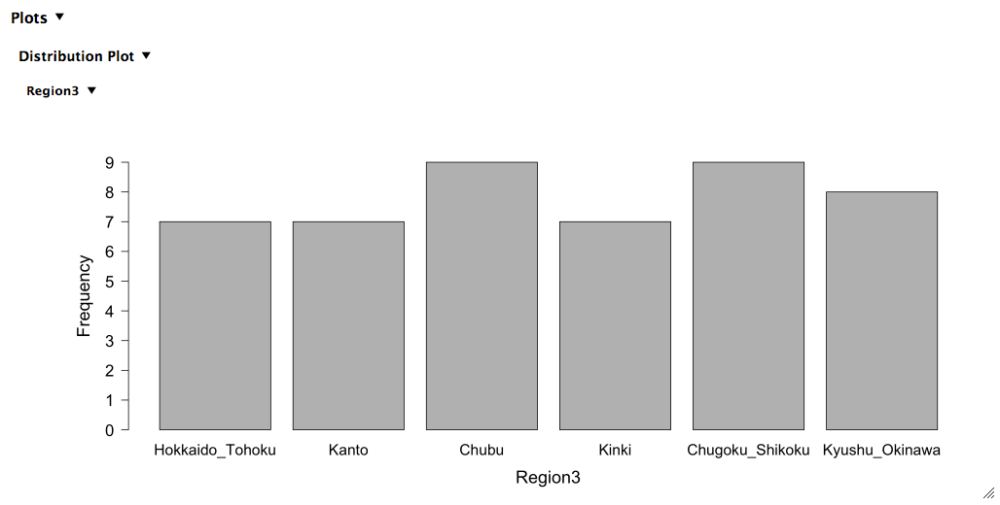
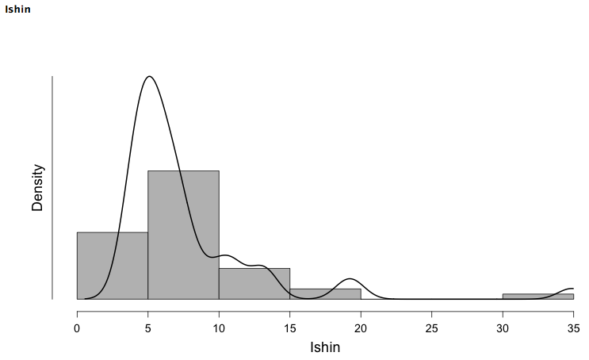
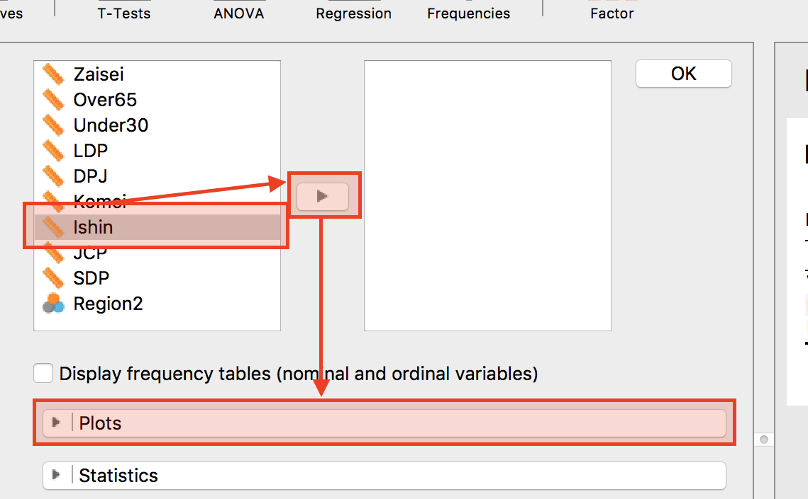
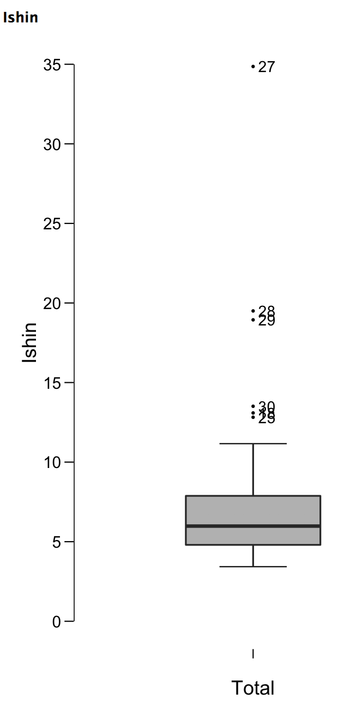
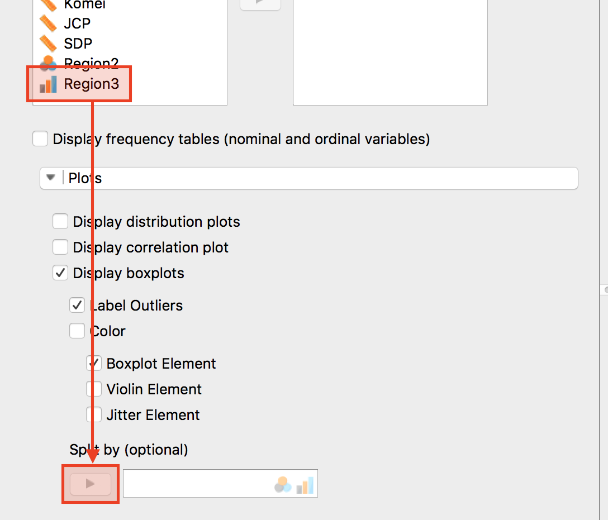
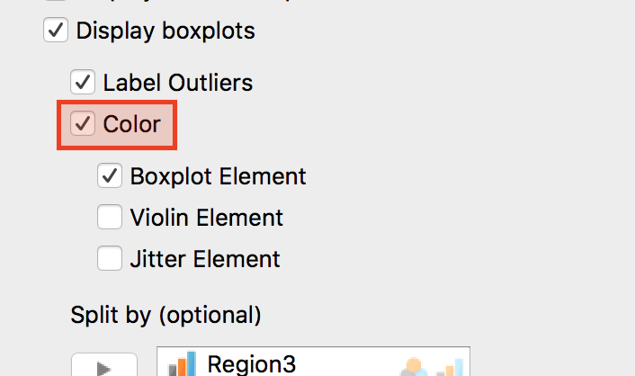
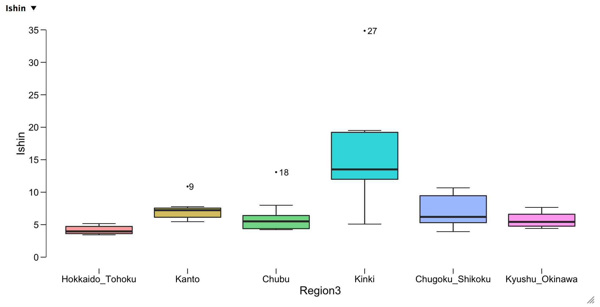

棒グラフ
- まずは棒グラフを作ってみましょう。棒グラフの横軸は各項目を意味し、縦軸は各項目の数 (度数)、あるいはデータ内で占める割合を意味します。棒グラフは名目変数あるいは順序変数を用います。とりわけ、名目変数なら選択の余地がなく、棒グラフくらいしか使えません。
- 今回は地域区分 (6区分)の棒グラフを作ってみましょう。

- 「Descriptive Statistics」画面で今回は「
Region3」変数を選択し、「▶」をクリックします。続いて、グラフを表示させるために「Plots」をクリックします。

- 「Display distribution plots」にチェックします。もし、変数が名目変数・順序変数なら自動的に棒グラフを、連続変数ならヒストグラムを表示してくれます。「
Region3」変数は名目変数なので棒グラフですね。

- 右の領域に棒グラフを表示されましたが、横軸のラベルが省略されている箇所がありますね。これはグラフのサイズが小さいため、文字が入り切れないためです。グラフの右下にマウスのポインターを持っていけば、赤字四角のようにポインターの形が変わります。

- これで棒グラフは完成ですね。
ヒストグラム
- ヒストグラムの作成は棒グラフと全く同じです。変数を連続変数にするだけです。以下の図は平成27年度参議院議員通常選挙における維新の得票率（
比例区）のヒストグラムです。各自やってみましょう。変数名は「Ishin」です。

- JASPもまだ開発初期段階なので作成されたグラフを微調整する機能がありませんね（軸ラベルの変更、棒の幅の調整など）。今後の発展が楽しみです。
箱ひげ図
- まずは変数一つ全体の箱ひげ図を作ってみます。前回と同様、「Descriptive Statistics」画面を表示させます。

- 今回も維新の得票率を使います。変数リストから「
Ishin」を選択し、「▶」をクリックします。続いて、図を表示させるために「Plots」をクリックします。

- 「Display boxplots」、「Label Outliers (任意)」、「Boxplot Element」にチェックします。これで完成です。

-
点に横にある数値は「外れ値の行番号」です。JASPは現在、外れ値のラベルを指定することはできません。各値がどの都道府県を指しているのかは実際のデータを見る必要があります。たとえば、27行目は大阪府です。
-
つづいて、維新の得票率を各地域ごとに分けて箱ひげ図を出してみましょう。
-
先ほどの箱ひげ図の練習とほぼ同一です。

- 異なる箇所は分割の基準となる変数、ここでは「
Region3」を「Split by (optional)」の方に入れることです。

- もうちょっと見栄をよくするために、「Color」にチェックをしましょう。

- これで完成です。維新の得票率の箱ひげ図を地域ごとに見ることができますね。